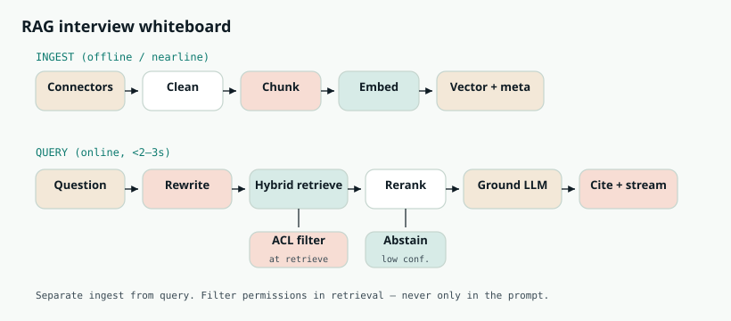
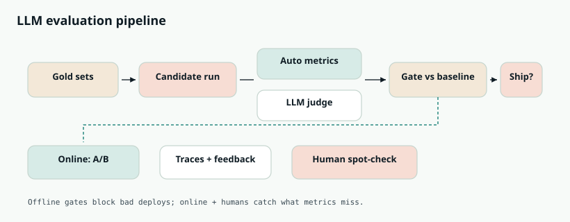
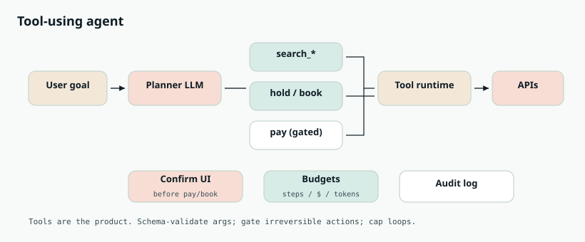
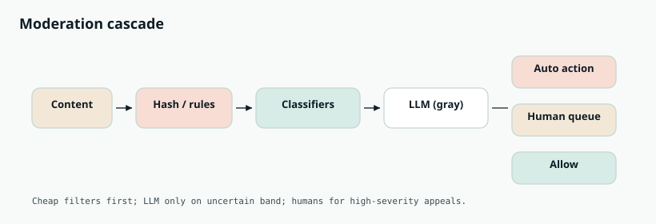
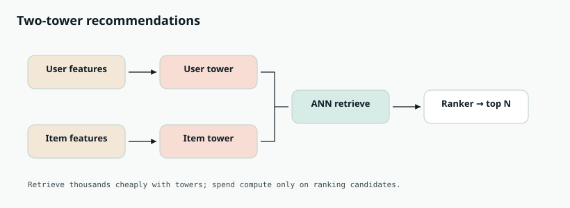
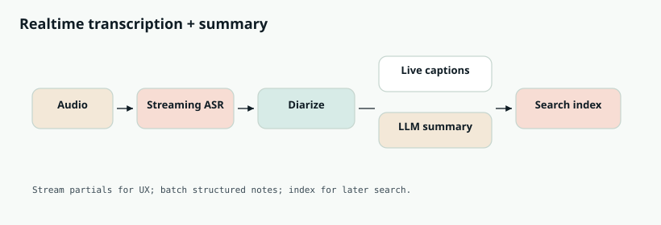
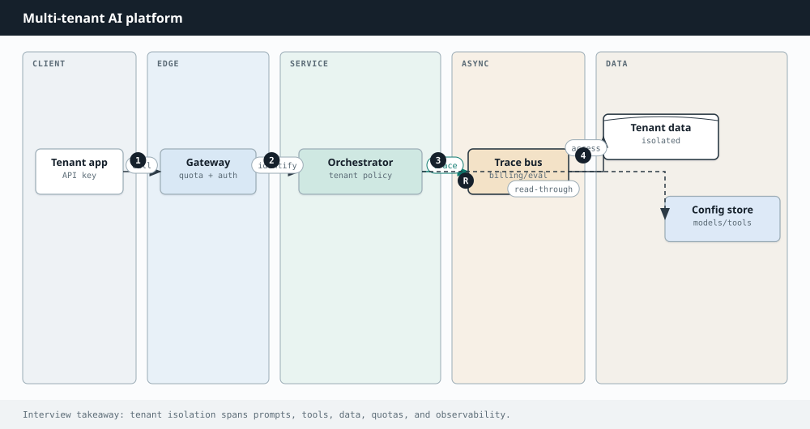
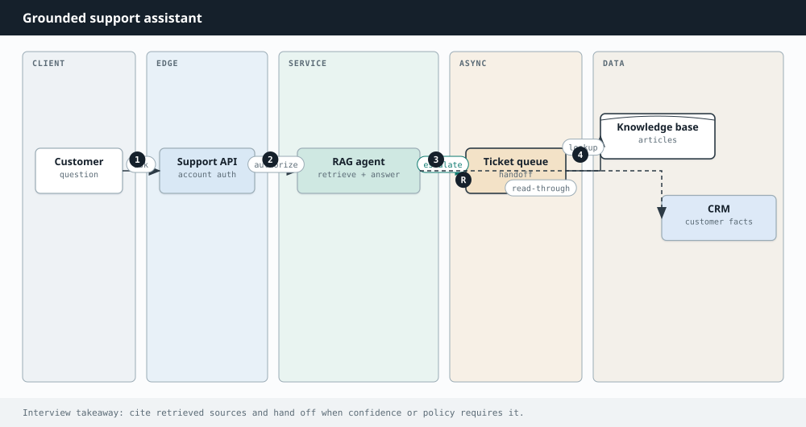

Interview Lab · AI Engineering
AI interview questions
Deep, diagrammed solutions for RAG, agents, eval, memory, and platform design — practice like a real 45-minute loop.
This lab is built for AI / ML system design interviews at product companies and AI platforms — the loops that ask you to design RAG, agents, eval, and cost-safe platforms (not derive attention from scratch on a whiteboard).
How to use it: For each question, practice a 35–45 minute answer: clarify → draw the diagram → narrate the step-by-step path → deep-dive one risky area (ACL, eval, side effects, cost) → list failure modes. Open a card, study it, then re-explain from memory without looking.

Related chapters: RAG, Agents, Memory, LLMs, Design an AI agent.
- Q1 RAG company knowledge assistant
- Q2 Semantic / vector search at scale
- Q3 LLM evaluation pipeline
- Q4 Tool-using booking agent
- Q5 Content moderation cascade
- Q6 Embedding recommendations
- Q7 Live transcription + notes
- Q8 Multi-tenant AI SaaS
- Q9 Hallucination-resistant support
- Q10 Long-running assistant memory
Q1. Design a ChatGPT-like Assistant with Company Knowledge (RAG)
Design an internal chatbot that answers employee questions using private wikis, tickets, and PDFs. It must cite sources, respect permissions, and minimize hallucinations. Walk the interviewer from requirements to a production architecture.
- Users & ACL: all employees, or role-based doc access?
- Latency: streaming first token <1s? full answer <5s?
- Freshness: wiki updates visible in minutes or hours?
- Modalities: text only, or tables/images/code?
- Languages: English only vs multilingual?
- Escalation: handoff to human / ticket create?
- Compliance: retention, audit logs, no training on prompts?
- Split two pipelines. Ingest is async; query is online. Never embed on the request path for large corpora.
- Ingest: connectors (Confluence/Drive/Ticket APIs) → normalize HTML/PDF → chunk (start 400–800 tokens, 10–15% overlap, split on headings) → embed → upsert
{vector, text, source_url, doc_id, updated_at, acl_tags}into a vector store + keep raw docs in object storage. - Query: auth user → optional query rewrite / HyDE → embed query → hybrid retrieve (ANN + BM25) with ACL filter in the query → rerank top 50→5–10 → build prompt ("answer ONLY from context; cite [n]") → stream tokens → return answer + citation links.
- Abstain: if top score / reranker confidence is low, say "I could not find this in company docs" instead of guessing.
- Observe: log trace_id, retrieved chunk ids, prompt version, latency, thumbs — feed eval (Q3).
1M docs × ~5 chunks = 5M vectors at 1536-d ≈ tens of GB raw; with HNSW/PQ plan memory carefully. 50 QPS peak with p95 < 2s is typical internal scale — cache frequent queries; autoscale embed + LLM separately.
System:
You are a company knowledge assistant. Use ONLY the Context passages.
If Context is insufficient, say you do not know. Cite sources as [1], [2].
Context:
[1] (source: wiki/Benefits.md, updated: 2026-01-12)
...passage...
[2] ...
User:
How many days of parental leave do we get?
- Tables/code? Keep table chunks intact; use structure-aware splitters; sometimes summarize tables into facts.
- ACL? Filter at retrieval with the user's groups — never retrieve then hope the LLM hides secrets.
- Updates? CDC / webhooks → rechunk changed docs; tombstone deletes; show
updated_atin citations. - Eval? Gold Q&A: retrieval recall@k, groundedness, citation accuracy, latency, cost.
Q2. Design Semantic Search / Vector Search at Scale
Design search that finds relevant documents by meaning for ~100M documents with p95 retrieval under ~100ms (before generation). Cover indexing, query path, and tradeoffs.
- Recall target (e.g. recall@100 ≥ 0.95)?
- Freshness: seconds, minutes, or daily rebuilds?
- Multilingual? Filters (time, type, tenant)?
- Is this retrieval-only or part of RAG?

- Document store: source of truth in object/SQL; search index holds vectors + lean metadata + doc_id.
- Embedding service: batch embed offline; online embed queries (cache popular query vectors).
- ANN index: start with HNSW for high recall; for 100M+ consider IVF-PQ / disk-ANN to control RAM. Shard by collection or tenant.
- Hybrid: run BM25 in parallel; fuse with Reciprocal Rank Fusion (RRF). Lexical saves error codes, SKUs, rare names.
- Rerank: cross-encoder on top 50–100 for quality; budget latency (e.g. +30–50ms).
- Versioning: model upgrades need re-embed — store
embedding_model_version; blue/green index swap.
100M × 768-d float32 ≈ 300GB raw vectors — compression (PQ) and sharding are not optional. Query embed ~10–30ms; ANN ~5–20ms; rerank dominates if naive. Cap candidates early.
- Recall vs latency vs memory (efSearch / nprobe knobs).
- Filtered ANN: pre-filter vs post-filter vs metadata-aware indexes.
- Exact kNN is a non-starter at this scale — say so.
- Multilingual: one multilingual encoder vs per-language indexes.
Q3. Design an LLM Evaluation Pipeline
You ship prompt, model, and RAG changes weekly. Design a system that catches quality regressions before and after production — without blocking the team forever.

- Split retrieval vs generation metrics. A bad answer may be bad retrieve or bad generate — measure both.
- Gold datasets: curated questions with expected docs / answers / rubrics. Tag slices (safety, ACL, freshness, multilingual).
- Offline runner: for each candidate config, execute pipeline → compute recall@k, EM/F1 where applicable, faithfulness/groundedness, toxicity, latency, $/query.
- LLM-as-judge: rubric prompts + reference answers; calibrate with human labels; spot-check weekly.
- Gate: compare to baseline; block deploy if primary metrics regress beyond threshold (or safety worsens at all).
- Online: shadow traffic, A/B, thumbs, regenerate rate, task success. Trace store: prompt version, chunk ids, tools, tokens, cost.
- Human loop: sample failures into annotation queues → grow gold set.
| Metric | Baseline | Candidate | Rule |
|---|---|---|---|
| Retrieval recall@5 | 0.81 | 0.84 | must not drop >2pp |
| Groundedness | 0.88 | 0.85 | block |
| p95 latency | 2.1s | 2.4s | warn if >+15% |
| $ / 1k queries | $4.2 | $3.9 | informational |
- Judges without rubrics → noisy, gameable scores.
- Only online thumbs → slow and biased.
- One aggregate score hides slice failures (e.g. ACL questions).
- Ignoring cost — a "better" model can be 10× spend.
Q4. Design a Tool-Using Agent (Flight Booking Assistant)
Design an agent that searches flights, compares options, and books with user confirmation. It must call external APIs safely and not run away on cost or side effects.

- Define tools as the product API.
search_flights,get_fare_rules,create_hold,confirm_booking,charge_payment— each with JSON Schema, timeouts, auth scopes. - Orchestrator loop: load session state → LLM chooses next action (tool or reply) → validate args → execute → append observation → repeat until done / need user / budget hit.
- Session state: slots (origin, dest, dates, cabin, budget) + last search results ids — do not rely on raw chat alone.
- Gate irreversible tools: pay/book require explicit user confirm in UI; server checks confirm token.
- Budgets: max steps (e.g. 12), max tokens, max $, detect repeated identical tool calls → stop.
- Reliability: idempotency keys on hold/pay; retries with backoff; treat tool output as untrusted (prompt injection).
- Audit: immutable log of tool calls for support/compliance.
{
"name": "search_flights",
"description": "Search one-way or round-trip flights",
"parameters": {
"type": "object",
"required": ["from", "to", "date"],
"properties": {
"from": {"type": "string", "pattern": "^[A-Z]{3}$"},
"to": {"type": "string", "pattern": "^[A-Z]{3}$"},
"date": {"type": "string", "format": "date"},
"cabin": {"enum": ["economy", "premium", "business"]}
}
}
}
def run_agent(session, user_msg):
session.messages.append({"role": "user", "content": user_msg})
for step in range(MAX_STEPS):
decision = llm.plan(session.messages, tools=TOOL_SPECS)
if decision.type == "reply":
return decision.text
if decision.tool in IRREVERSIBLE and not session.user_confirmed:
return ask_confirmation(decision)
args = validate(decision.tool, decision.args) # raises on bad schema
result = runtime.call(decision.tool, args, idem=session.step_key(step))
session.messages.append({"role": "tool", "name": decision.tool, "content": result})
return "I hit my step limit — here is what I found so far…"
- Why not one giant prompt? Tools keep side effects explicit and testable.
- MCP? Same idea — discovered schemas, scoped auth (see MCP chapter / Q follow-ups in drills).
- When NOT to use an agent? Fixed workflows → plain API + form; agents add latency and failure modes.
Q5. Design Content Moderation with ML + LLMs
Design a system that detects policy-violating user content (text, images, video) at upload and in feeds — balancing precision, recall, latency, and cost.

- Policy packs: machine-readable rules per region/product (severity, spam, NSFW, self-harm, etc.).
- Cascade for cost: (1) exact/perceptual hashes for known CSAM/terror; (2) cheap classifiers; (3) multimodal LLM only on uncertain scores; (4) human review for high-severity or appeals.
- Actions: block, blur, age-gate, demonetize, queue — not only binary delete.
- Latency tiers: chat may need <100ms heuristics; VOD can be async before publish.
- Feedback: moderator labels → training data; shadow-deploy new models; track FP/FN by policy.
- Adversaries: rate limits, graph features, obfuscation detectors — LLM alone is not enough for critical classes.
Q6. Design Recommendations with Embeddings
Design recommendations for a media app that suggests what a user engages with next. Cover candidate generation, ranking, cold start, and metrics.

- Problem split: retrieve ~O(10³–10⁴) candidates cheaply, then rank with a heavier model.
- Two-tower: user tower and item tower → dot product / cosine; ANN over item embeddings for retrieval.
- Features: history, context (time/device), freshness, popularity priors for cold start.
- Ranker: gradient-boosted trees or deep ranker on candidates with cross features.
- Business rules: diversity, creator fairness, exploration budget (ε-greedy / bandits).
- Serving: precompute user embeddings; nearline updates from session; feature store for ranker.
- Metrics: not only CTR — dwell, completion, long-term retention; offline replay + online A/B.
- New items: content embeddings from title/metadata/audio/video.
- New users: onboarding preferences + popular-in-locale priors.
- Do not wait for collaborative signal only.
Q7. Design Real-Time Meeting Transcription + Summarization
Design a system that live-transcribes meetings and produces summaries, action items, and searchable notes afterward.

- Ingest audio: client or SFU sends stream → streaming ASR with partial hypotheses.
- Diarization: speaker labels (and optional voice profiles) aligned to transcript segments.
- Live UX: push partials over WebSocket; accept revisions as ASR stabilizes.
- Notes: on end (or every N minutes) LLM fills a schema: decisions, action items {owner, due}, risks — not free prose only.
- Search: index segments with BM25 + embeddings; link back to timestamps.
- Privacy: PII redaction options, retention TTLs, region lock; do not train on customer audio by default.
Do not summarize every utterance. Batch windows. Offer "transcript only" tiers. Cache repeated meeting templates.
Q8. Design Multi-Tenant AI SaaS with Cost Controls
You sell an API that wraps foundation models to thousands of tenants. Design tenancy, billing, noisy-neighbor protection, and data isolation.

- Identity: per-tenant API keys / OAuth; map to plan limits.
- Gateway: auth → rate limit (RPM + TPM) → daily/$ quotas → model router (policy: default model, allowed providers, data residency).
- Metering: tokens in/out, tool calls, retrieval units → billing pipeline; show usage dashboards.
- Isolation: encrypt data per tenant where required; strict retrieval ACL; no cross-tenant caches of prompts with PII.
- Abuse: anomaly detection on token spikes; fail closed on quota; priority lanes for enterprise.
- Agent runaway: require max_steps / max_$ on agent endpoints; estimate cost before loops.
Q9. Design a Hallucination-Resistant Customer Support Bot
A support bot can explain policies, refund within limits, and reset passwords. Keep it truthful and prevent unsafe or unauthorized actions.

- Intent classifier: knowledge vs action vs frustrated/escalation.
- Knowledge path: RAG over approved policy corpus with mandatory citations; abstain if empty retrieval; never invent policy numbers.
- Action path: tools with server-side authorization (order ownership, refund caps, fraud checks). The LLM proposes; the tool enforces.
- Separate tones: helpful chat ≠ authorized action. Confirm destructive actions.
- Escalation: low confidence, user asks human, policy gaps, high $ — hand off transcript.
- Security: jailbreak + prompt-injection tests in CI; treat ticket text as untrusted.
def refund(order_id, amount_cents, actor_user_id, confirm_token):
order = db.get_order(order_id)
assert order.user_id == actor_user_id
assert amount_cents <= policy.max_auto_refund_cents(order)
assert confirm_token_valid(confirm_token)
# LLM cannot bypass these checks
return payments.refund(order_id, amount_cents, idempotency_key=...)
Q10. Design Memory for a Long-Running Personal Assistant
Design memory so an assistant remembers preferences and projects across months without stuffing the entire history into every prompt.
- Short-term: current thread in the context window; when near limit, summarize older turns but pin IDs/numbers into structured working state.
- Working state: task slots (project name, deadlines) as JSON — not only prose summary.
- Long-term write: extract durable facts/preferences with confidence; prefer explicit "Remember that…"; store user-visible, editable records.
- Long-term read: each turn retrieve top relevant memories (metadata filters + embeddings) into the system prompt.
- Forget: tombestone/delete APIs; GDPR wipe across SQL + vectors + caches.
- Separation: personal vs org memory with different ACLs in B2B.
- Wrong memories poison future answers — make correction easy.
- Never store passwords or payment secrets in memory.
- Silent inference of sensitive attributes can be creepy/wrong — be conservative.
MemoryRecord {
id, user_id, org_id?,
type: preference | fact | episode,
text, embedding,
confidence, source, updated_at,
deleted_at?
}